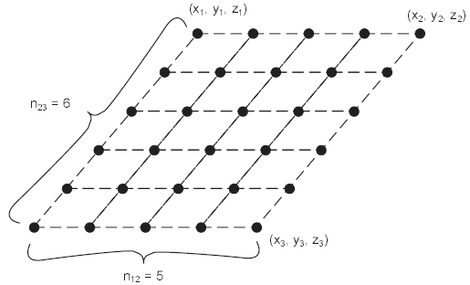

block thermal 命令
语法
- block thermal keyword <range>
主要关键字：
解析（analytical） convection 热源网格（grid） 等温边界（isothermal） 隐式求解（implicit） 线（line） list 质量缩放（mass-scale） 点（point） source 对称面（symmetry-planes）
指定热学计算的配置。此处所示的所有命令仅在具备热学选项时适用。更多信息请参见 热学选项（Thermal Option） 主题。
- analytical <b >
将 3DEC 中使用的热学逻辑切换为解析解方法（设为 on）。若未给出 b 的值，则假定用户希望开启解析解。默认情况下，解析解为 off。
- substep i
设置两次解析热学解之间执行的力学步数。
- tolerance f
设置热学计算的容差。该容差可视为热源半径。若在距某网格点小于 f 的位置计算温度，则将该网格点距离取为 f。这是必要的，因为点热源引起的温度解析解在距热源的距离趋于零时趋于无穷大。（默认值为 f = 0.1。）
- conductivity f
设置解析解中使用的导热系数。
- diffusivity f
设置解析解中使用的热扩散系数。
- grid <keyword>
建立一个点热源网格，每个点热源的 strength 为 f。热源可位于 3DEC 网格之外。若未指定，time-start 默认为零。必须指定 type 和 strength。类型、强度和热源数目可按任意顺序指定。
- point-1 v
指定网格的左上角点。
- point-2 v
指定网格的右上角点。
- point-3 v
指定网格的右下角点。
- source i
指定热源编号。该编号引用由 区块热源命令（
block thermal source） 命令定义的热源。
- strength f
指定每个点热源的强度。
- n12 f
设置网格从左到右的点数。
- n23 f
设置网格从上到下的点数。
- time-start a
设置起始时间。

图 1：热源网格，用命令 BLOCK THERMAL GRID POINT-1 (10, 10, 10) POINT-2 (20, 20, 20) POINT-3 (20, 0, 10) SOURCE=1 STRENGTH=10 N12=5 N23=6 输入
- isothermal <fx > <fy > <fz >
定义等温边界层。例如，若发出命令
block isothermal0 0，则由 \(x\) = 0 和 \(y\) = 0 定义的两个平面即为等温面。注意
一个平面不能同时为等温边界和对称面。
- line
创建线热源。该热源由一个起点、一个终点和 i 个点热源组成。必须指定 strength 和 type。热源可位于 3DEC 网格之外。类型、强度和热源数目可按任意顺序指定。
- point-1 v
设置直线的起点。
- point-2 v
设置直线的端点。
- source i
设置热源编号。该编号引用由 区块热源命令（
block thermal source） 命令定义的热源。
- strength f
设置强度。
- n12 f
设置直线上的点数。
- <time-start
设置起始时间。若未指定，起始时间默认为零。
- list <keyword>
列出模型的热学设置。
- apply
列出施加了热学条件的块体。
- heat
列出热源数据（仅在具备热学选项时可用——参见 热学选项（Thermal Option））。
- point v source i strength f1 <time-start f2 >
在点 v 处创建一个初始 strength 的点热源，该点不必位于 3DEC 所定义的块体之内。热源编号为 \(n\)（其分量和衰减常数由 区块热源命令（
block thermal source） 定义），起始时间为 f2。若未指定，起始时间默认为零，但必须指定 source 和 strength。热源与强度可按任意顺序指定（仅在具备热学选项时可用——参见“可选功能”中的第 1 节）。
- source 在（in ）keyword ...
设置热源各组成部分的一般信息。热源的标识号 \(n\) 必须是命令中 block thermal source 之后的第一项。
区块热源点命令（block thermal point）、区块线热源命令（block thermal line） 和 区块热源网格命令（block thermal grid） 命令用于确定这些热源的位置，并指定其初始强度和起始时间。在输入各分数和衰减常数之前，必须先指定分量数，可以在同一命令行中指定，也可以在前一条命令行中指定。所有分数之和必须为 1。
此项仅在热学选项下可用（参见 热学选项（Thermal Option））。
- number-components i
设置构成该热源的分量数。
- symmetry-planes <fx > <fy > <fz >
该命令用于定义热学对称面。例如，若发出命令 区块热对称面命令（
block thermal symmetry-planes） y 向尺寸（fy），则由 \(y\) = 0 定义的平面即为对称面。对称面用于表示绝热边界。
| 这些内容对您有帮助吗？… 版权与免责声明 | FLAC3D © 2019, Itasca | 原文更新于 2020 年 10 月 8 日 |